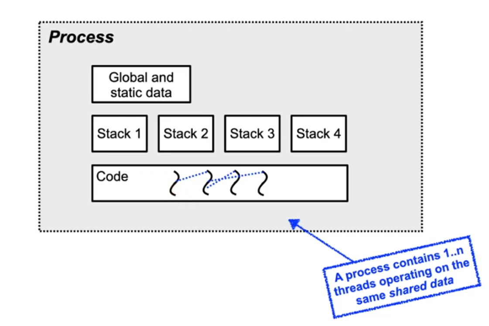

↩️ vault/public
Lecture 5: Threads
<iframe width="560" height="315" src="https://www.youtube.com/embed/jh2UN8KEy9s" title="YouTube video player" frameborder="0" allow="accelerometer; autoplay; clipboard-write; encrypted-media; gyroscope; picture-in-picture" allowfullscreen
</iframe>
Exam
Threads as a lightweight abstraction and process alternative
Important questions:
- What is the overhead of Unix processes and their creation?
- What are the differences between address spaces for processes and threads?
- What are the thread models in Unix and Windows?
- What are fibers (user-level threads)?
- Can you discuss pros and cons of threads vs. fibers?
- Cooperative multithreading
- Can you describe the ideas behind Duff’s device and protothreads? (you don’t have to know the details of their implementations)
Lightweight processes - threads
- With processes, there is a 1:1 relation between control flow and address space
- Even for forked processes due to copy-on-write
- Closely cooperating threads can share an address space
- code + data + bss + heap, but not the stack!
- Why not the stack?
- Each thread has an independent flow of control
- Accordingly, it required an independent call hierarchy, local variables etc.
- Advantages of threads:
- Complex operations can be delegated to a lightweight helper thread
- The parent thread can already wait for input while the helper thread is running -> reduced latency (response time)
Threads example
- Typical use case for threads: web server
- Programs consisting of independent control flows can immediately benefit from multiprocessor systems
- Fast context switch: no need to copy the address space
- only switch the stack pointer - one CPU register
- Disadvantage of threads
- Difficult to error-prone to program
- Acces to shared data of threads requires coordinations
- OS still has to schedule threads -> overhead
Threads in Windows

Threads in Windows (2)
- Process: provides environment and address space for threads
- But has no execution context itself!
- A Win32 process always contains at least one thread
- Thread: unit executing code
- Every thread has its own stack and CPU register set (escpecially the program counter)
- The scheduler allocated compute time to the threads
- All threads are kernel level threads
- User level threads (fibers) are possible, but unusual
- Stretegy: Keep the number of threads low
- Use overlapping (asynchronous) I/O
Threads in Linux
- Linux implements POSIX threads using the pthreads library
- pthreads on Linux use a Linux-specific system call:
Linux system call: int __clone(in (*fn)(void*), void *stack, int flags, void *arg)
Universal function, parameterized using the flags parameter:
| _ | Description |
|---|---|
CLONE_VM |
use a common address space |
CLONE_FS |
share information about the file system |
CLONE_FILES |
share file descriptors (open files) |
CLONE_SIGHAND |
share the signal handler table |
- In Linux, all threads and processes are internally managed as tasks
- The scheduler does not differentiate between those
Threads in Linux (2)
- Originally, threads of a process showed up as individual processes in the
psoutput - More recent Linux systems (from kernel 2.4) still behave like this, but no longer show separate processes when using
CLONE_THREAD
Fibers
- Also called user-level threads, green threads or featherweight processes
- Implemented on application level only (inside of a process)
- The operating system doesn't know about fibers
- Accordingly, scheduling affects the whole process
- Implemented using a library: user level thread package
- Advantages:
- Extremely fast context switch: only exchange processor registers
- No switch to kernel mode required to switch to different fiber
- Every application can choose the fiber library best suited for it
- Disadvantages:
- Blocking a single fiber leads to blocking the whole process (since the OS doesn't know about fibers)
- No speed advantage from multiprocessor systems
Inspiration: Duff's device
- Problem: copying 16-bit unsigned integers ("short"s) from an array into a memory-mapped output register is slow (loop overhead):
send(short *to, *from, int count)
{
do { /* count > 0 assumed */
*to = *from++;
} while (--count > 0);
}
- Optimization: unroll the loop
- Execute multiple copy operations inside a single loop iteration
- Reduces the loop overhead
send(short *to, *from, int count)
{
register n = count / 8;
do {
*to = *from++;
*to = *from++;
*to = *from++;
*to = *from++;
*to = *from++;
*to = *from++;
*to = *from++;
*to = *from++;
} while (--n > 0);
}
- Problem with loop unrolling:
counthas to be a multiple of 8! - Duff's solution: Introduce a jump into the loop body (using the C switch statement) to implement the first n mod 8 iterations!
send(short *to, *from, int count)
{
register n = (count + 7) / 8;
switch (count % 8) {
case 0: do { *to = *from++;
case 7: *to = *from++;
case 6: *to = *from++;
case 5: *to = *from++;
case 4: *to = *from++;
case 3: *to = *from++;
case 2: *to = *from++;
case 1: *to = *from++;
} while (--n > 0);
} // Please do not write code like this..
Fibers example: Protothreads
- Stackless, lightweight threads, or coroutines
- Provide a blocking context cheaply using minimal memory per protothread (on the order of single bytes)
- Developed by Adam Dunkels (SICS)
// protothreads implementation: pt.h
#define PT_BEGIN(pt) \
switch(pt->lc) { case 0:
// … more macros defined …
#define PT_WAIT_UNTIL(pt, c) \
pt->lc = __LINE__; case __LINE__: \
if(!(c)) return 0
#include "pt.h"
// … protothreads example …
PT_THREAD(example(struct pt *pt)) {
PT_BEGIN(pt);
while (1) {
if (initiate_io()) {
timer_start(&timer);
PT_WAIT_UNTIL(pt,
io_completed() ||
timer_expired(&timer));
read_data();
}
}
}
Processes vs. threads. vs. fibers
| _ | Processes | Threads | Fibers |
|---|---|---|---|
| Address space | separate | common | common |
| Kernel visibility | yes | yes | no |
| Scheduling | kernel level | kernel level | user space |
| Stack | separate per process | separate per thread | can be common |
| Switching overhead | very high | high | low |
Conclusion
- Traditional Unix process creation using
forkis too heavyweight for some applications- e.g. a heavily used web server
- Alternatives exist
- (kernel-level) threads
- (user-level) fibers
- Each solution has its own advantages and drawbacks
- Processes: copy and scheduling overhead
- Threads: syncronization difficult to program
- Fibers: no kernel management
- blocking a fiber of a process blocks all fibers
- Linux har used the Unix process model exclusively for a long time
- Windows (NT) didn't have to be compatible and implemented threads from the beginning